Unit 10 · Retrieval systems, guests, and project synthesis
Lesson 10: Retrieval systems, guests, and project synthesis
Unit: cs229s-U10. Concepts: cs229s-U10-C01 to C12.
Date: 2026-10-06. Baseline: October 6, 2026.
Claim class for every leaf: PLANNED / SOURCE ATTRIBUTION PENDING.
Family anchor: CALENDAR-ANCHORED, Week 10, Dec 02,
“Efficient Retrieval Systems”. Guest anchors: Nov 22 guest
lecture by Albert Gu (CMU, Cartesia AI). Nov 11 guest
lecture by Dylan Patel (SemiAnalysis). Project anchors:
Oct 21 project proposals due, Nov 11 milestone reports due,
Dec 06 poster session (final project presentations),
Dec 09 final project reports due. All numbers are lesson
toys computed here. Shared bridges: P19 (retrieval and
information access), P22 (experimental method and research
literacy), P24 (production ML and stakeholder foundations),
at v2-pack/shared/prerequisites/.
C01: index build versus query
Source, scope, objectives, dependencies
Calendar anchor: Week 10, Dec 02, “Efficient Retrieval Systems”. Scope: the two costs of a retrieval system. Objective: amortize build cost over queries on a toy. Depends on P19.
Motivating question and tiny toy
Question: the index takes 2 hours to build but answers in 5 ms. Is it worth it? Toy: 1M documents, build 7200 s once, query 0.005 s.
Mental model
The index is a library catalog: expensive to compile, cheap to consult. The build is a fixed cost. Each query pays the marginal cost plus its share of the build. The more queries, the cheaper each one.
Objects, shapes, assumptions
- Build B seconds (once). Query q seconds.
- Amortized cost at N queries: B/N + q.
- Assumption: the index is static between rebuilds.
Derivation
N = 1M queries: B/N = 7200/1e6 = 0.0072 s = 7.2 ms. Total per query: 12.2 ms. N = 1000: 7.2 s per query: the build dominates. Do not build. Break-even vs brute force at 50 ms/query: build wins when B/N + q < 0.05: N > 7200/0.045 = 160,000 queries.
Computed example
Toy above: 12.2 ms amortized at 1M queries, break-even at 160k queries. A corpus queried 10 times a day never earns its index. One queried a million times does. Lab-10 asserts the break-even.
Implementation and checks
def amortized(B, q, N):
return B / N + q
assert abs(amortized(7200, 0.005, 1e6) - 0.0122) < 1e-9
be = 7200 / (0.05 - 0.005)
assert abs(be - 160000) < 1
Check: seconds. Lab-10 asserts the break-even.
Complexity and costs
Build is O(corpus). Query is O(log corpus) for ANN.
Nearest alternative and selection boundary
Nearest alternative: brute-force scan per query. Selection boundary: build when queries exceed break-even. Scan when the corpus is tiny or single-use.
Failure case and counterexample
Broken assumption: “the index is static.” Counterexample: news corpus, hourly rebuilds: the build cost recurs and the amortization resets.
Research reading and falsifiable extension
Reading: the Dec 02 retrieval session. Falsifiable extension: measure build and query on a real corpus subset. Hypothesis: the break-even formula predicts the crossover within 2x. Report both.
Exercises
- E01 (recall): write the amortization formula.
- E02 (numerical): toy above. Compute amortized cost at 1M queries and the break-even N.
- E03 (failure diagnosis): the index never pays off. What is the query volume?
- E04 (counterfactual): rebuilds are hourly. What changes?
- E05 (research): state the break-even hypothesis.
Visual units
- Figure
u10_c01_amortize.png: cost curve crossing brute force at 160k. Source: original toy. Shell 6.
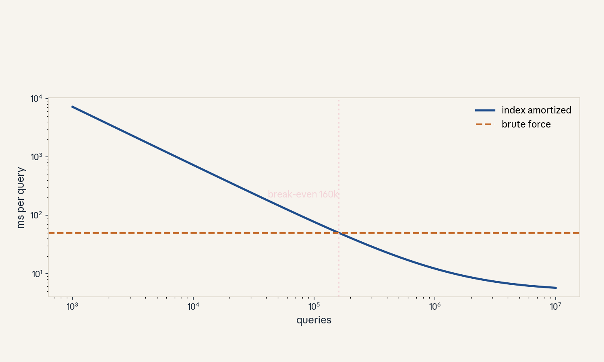
- Audit:
u10c01tof01. Before: 2 h build. After: 12.2 ms/query. One rule: divide by N.
C02: embedding storage
Source, scope, objectives, dependencies
Calendar anchor: Week 10, Dec 02, “Efficient Retrieval Systems”. Scope: what vectors cost to keep. Objective: compute dense vs compressed storage on a toy. Depends on P19, U05.
Motivating question and tiny toy
Question: a million documents, each a 768-dim vector. How much RAM? Toy: fp32 dense vs 64-byte product quantization (PQ).
Mental model
Embeddings are a warehouse of vectors. Dense fp32 is pallets on the floor: fast to grab, huge footprint. PQ is vacuum packing: 64 bytes per vector, tiny footprint, but each grab needs unpacking (decompression cost at query time).
Objects, shapes, assumptions
- Dense bytes = docs * dims * bytes_float.
- PQ bytes = docs * code_bytes.
- Assumption: one vector per document.
Derivation
Dense: 1e6 * 768 * 4 = 3,072,000,000 bytes = 2.86 GiB. PQ: 1e6 * 64 = 64,000,000 bytes = 61 MiB. Ratio: 48x. The price: approximate distances (recall drops, C03 measures it).
Computed example
Toy above: 2.86 GiB vs 61 MiB. At 100M docs: dense 286 GiB (needs a server), PQ 6.1 GiB (fits in RAM). Lab-10 asserts the byte counts.
Implementation and checks
dense = 10**6 * 768 * 4
pq = 10**6 * 64
assert dense == 3072000000
assert pq == 64000000
assert dense / pq == 48
Check: exact. Lab-10 asserts the ratio.
Complexity and costs
Storage is one-time. The query-time unpack cost is per query.
Nearest alternative and selection boundary
Nearest alternative: fp16 dense (halves the footprint, exact). Selection boundary: PQ when RAM binds. Dense when recall is paramount.
Failure case and counterexample
Broken assumption: “distances survive.” Counterexample: aggressive PQ on a hard distractor set: recall collapses and the top results are wrong.
Research reading and falsifiable extension
Reading: the Dec 02 retrieval session. Falsifiable extension: sweep PQ bytes, measure recall@10. Hypothesis: recall is flat then falls past a knee. Report the curve.
Exercises
- E06 (recall): write both storage formulas.
- E07 (numerical): toy above. Compute both byte counts and the ratio.
- E08 (failure diagnosis): recall collapses after compression. What was overdone?
- E09 (counterfactual): dims halve. What happens to the ratio?
- E10 (research): state the knee hypothesis.
Visual units
- Figure
u10_c02_warehouse.png: pallet vs vacuum-pack bars, 48x. Source: original toy. Shell 8.
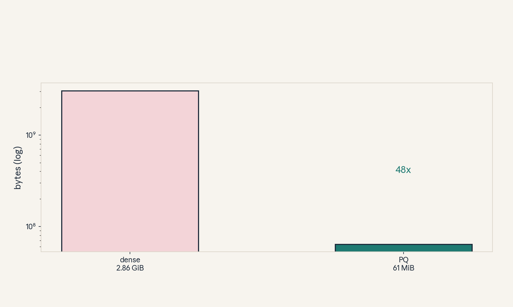
- Audit:
u10c02tof02. Before: dense. After: PQ. One rule: count the bytes.
C03: ANN recall/latency
Source, scope, objectives, dependencies
Calendar anchor: Week 10, Dec 02, “Efficient Retrieval Systems”. Scope: approximate nearest neighbors. Objective: read the recall/latency tradeoff on a toy table. Depends on P19, C02.
Motivating question and tiny toy
Question: exact search is slow. How much recall does speed cost? Toy table (labeled toy, not a benchmark): brute force 1.00 @ 50 ms. IVF 0.95 @ 5 ms. HNSW 0.98 @ 8 ms.
Mental model
ANN is a phone book with tabs: IVF jumps to the right section (coarse quantizer), HNSW walks a highway of shortcuts (graph). Tabs cost a little accuracy: the right name is occasionally in the next section.
Objects, shapes, assumptions
- Recall@k: fraction of true top-k found.
- Latency per query in ms (toy).
- Assumption: the toy numbers illustrate the tradeoff shape, not real systems.
Derivation
Brute force: recall 1.00, 50 ms. IVF: 10x faster, recall 0.95 (5 misses per 100). HNSW: 6.25x faster, recall 0.98. Cost per recall point: IVF buys 0.95 at 5 ms (0.19/ms). HNSW buys 0.98 at 8 ms (0.1225/ms): IVF is cheaper per point here.
Computed example
Toy above. For a recall floor of 0.97: only HNSW (0.98) qualifies among the two. IVF fails the floor. The floor picks the system. Lab-10 asserts the floor logic.
Implementation and checks
systems = {"brute": (1.00, 50), "ivf": (0.95, 5),
"hnsw": (0.98, 8)}
ok = [n for n, (r, _) in systems.items() if r >= 0.97]
assert ok == ["brute", "hnsw"]
Check: the floor filters. Lab-10 asserts the selection.
Complexity and costs
The tradeoff is tuned by index parameters (nprobe, efSearch): more work, more recall.
Nearest alternative and selection boundary
Nearest alternative: exact search. Selection boundary: ANN when the corpus is large and 0.95+ suffices. Exact when recall must be 1.00.
Failure case and counterexample
Broken assumption: “recall is uniform.” Counterexample: hard queries (rare terms) fail far more than average: mean recall 0.97 hides a 0.70 tail.
Research reading and falsifiable extension
Reading: the Dec 02 retrieval session. Falsifiable extension: measure recall per query difficulty. Hypothesis: the tail is worse than the mean suggests. Report the distribution.
Exercises
- E11 (recall): define recall@k.
- E12 (numerical): toy table. Which systems meet a 0.97 floor, and at what latencies?
- E13 (failure diagnosis): mean recall is fine but users complain. What do you measure?
- E14 (counterfactual): latency budget 6 ms. Who wins?
- E15 (research): state the tail hypothesis.
Visual units
- Figure
u10_c03_tradeoff.png: recall vs latency scatter, floor line. Source: original toy. Shell 8.
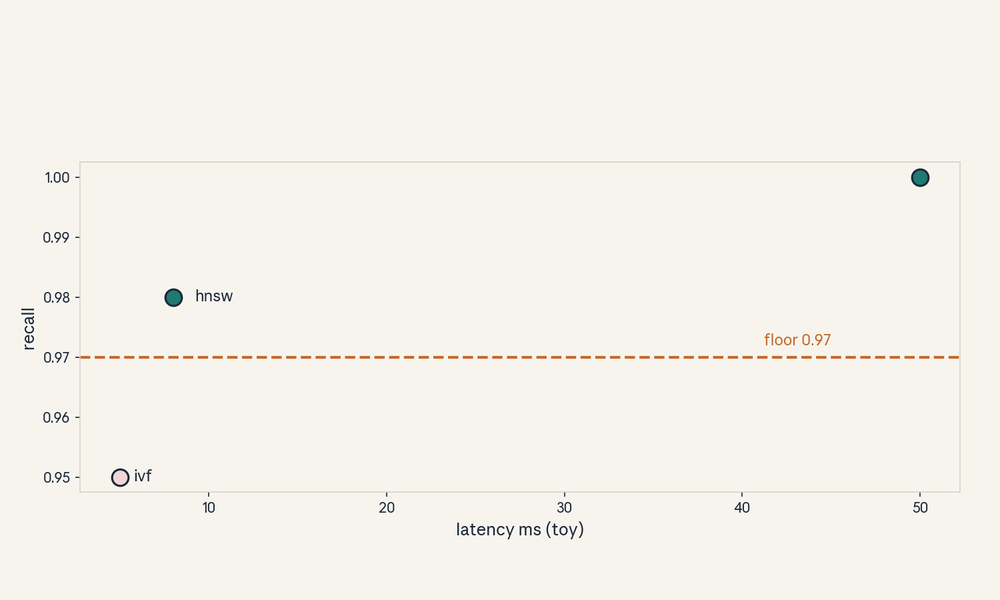
- Audit:
u10c03tof03. Before: three systems. After: the floor picks. One rule: set the floor.
C04: hybrid retrieval
Source, scope, objectives, dependencies
Calendar anchor: Week 10, Dec 02, “Efficient Retrieval Systems”. Scope: combining sparse and dense. Objective: compute a reciprocal-rank-fusion score on a toy. Depends on P19, C03.
Motivating question and tiny toy
Question: BM25 catches keywords, dense catches meaning. How do you merge the lists? Toy: doc D ranks 3rd in BM25, 5th in dense. RRF k = 60.
Mental model
Hybrid retrieval is two witnesses: one heard the words, one got the meaning. Reciprocal rank fusion lets each witness vote with 1/(k + rank): top ranks vote loud, deep ranks whisper. No score calibration needed: ranks are the common tongue.
Objects, shapes, assumptions
- RRF(d) = sum over systems of 1/(k + rank).
- k = 60 (dampens rank differences).
- Assumption: ranks are comparable across systems.
Derivation
RRF(D) = 1/63 + 1/65 = 0.015873 + 0.015385 = 0.031258. A doc ranked 1st and 100th: 1/61 + 1/160 = 0.016393 + 0.00625 = 0.022643: loses to D. Two mid ranks beat one top plus one deep rank: fusion rewards agreement.
Computed example
Toy above: D scores 0.031258 and beats the 1st+100th doc at 0.022643. The lesson: hybrid wins when the systems agree, which is exactly when each alone is uncertain. Lab-10 asserts both scores.
Implementation and checks
def rrf(ranks, k=60):
return sum(1 / (k + r) for r in ranks)
assert abs(rrf([3, 5]) - 0.031258) < 1e-6
assert abs(rrf([1, 100]) - 0.022643) < 1e-6
Check: six decimals. Lab-10 asserts both.
Complexity and costs
Fusion is O(k) arithmetic per doc: trivial next to retrieval.
Nearest alternative and selection boundary
Nearest alternative: single-system retrieval. Selection boundary: hybrid when the query mix has both keyword and semantic needs. Single when one dominates.
Failure case and counterexample
Broken assumption: “ranks are comparable.” Counterexample: one system returns 10 results, the other 1000: rank 50 means different things and the fusion misweights.
Research reading and falsifiable extension
Reading: the Dec 02 retrieval session. Falsifiable extension: ablate hybrid vs each alone on a mixed query set. Hypothesis: hybrid wins overall but loses on pure-keyword queries. Report the split.
Exercises
- E16 (recall): write the RRF formula.
- E17 (numerical): toy above. Compute both scores and the winner.
- E18 (failure diagnosis): fusion hurts on keyword queries. Why?
- E19 (counterfactual): k = 0. What happens?
- E20 (research): state the ablation hypothesis.
Visual units
- Figure
u10_c04_fusion.png: two ranked lists merging into one. Source: original toy. Shell 3.
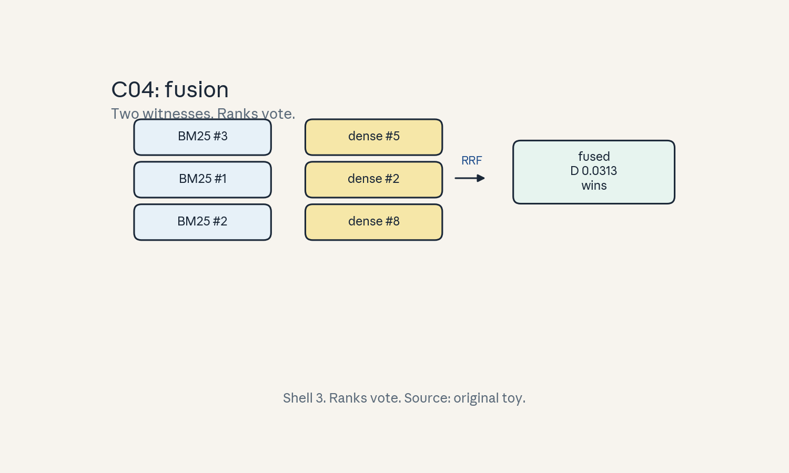
- Audit:
u10c04tof04. Before: two lists. After: one fused. One rule: ranks vote.
C05: filtering/reranking
Source, scope, objectives, dependencies
Calendar anchor: Week 10, Dec 02, “Efficient Retrieval Systems”. Scope: the cascade. Objective: compute cascade cost on a toy. Depends on C03, C04.
Motivating question and tiny toy
Question: the cross-encoder is accurate but slow. How do you afford it? Toy: 1M docs -> ANN top 100 (5 ms) -> filter top 20 -> cross-encoder top 5 (20 ms each).
Mental model
The cascade is airport security: the fast lane (ANN) screens everyone, the slow lane (cross-encoder) interviews the few. Cost = cheap * many + expensive * few. The funnel shape is the whole economy.
Objects, shapes, assumptions
- Stages with (count_in, cost_each).
- Total = sum count * cost.
- Assumption: the toy stage costs are labeled.
Derivation
ANN: 5 ms. Cross-encoder: 20 docs * 20 ms = 400 ms. Total 405 ms. Without the ANN: 1M * 20 ms: absurd. Tighten to top 10: 200 ms + 5 ms = 205 ms: half the cost, but recall may drop (C03). The cascade trades recall for latency at each narrowing.
Computed example
Toy above: 405 ms per query, 99% of it in the reranker. The reranker is the bill: optimize it first (distill it, quantize it per U05). Lab-10 asserts the 405.
Implementation and checks
total = 5 + 20 * 20
assert total == 405
tight = 5 + 10 * 20
assert tight == 205
Check: ms. Lab-10 asserts both.
Complexity and costs
The cascade cost is set by the last stage’s count.
Nearest alternative and selection boundary
Nearest alternative: single-stage ANN only. Selection boundary: cascade when quality needs the reranker. ANN-only when latency forbids it.
Failure case and counterexample
Broken assumption: “the funnel keeps the good.” Counterexample: the ANN’s top 100 misses the gold doc (recall 0.95): the reranker never sees it and the answer is wrong.
Research reading and falsifiable extension
Reading: the Dec 02 retrieval session. Falsifiable extension: sweep the funnel width, plot recall vs latency. Hypothesis: a knee exists. Report it.
Exercises
- E21 (recall): write the cascade cost formula.
- E22 (numerical): toy above. Compute total and the tightened total.
- E23 (failure diagnosis): quality drops though the reranker is great. Where did the gold go?
- E24 (counterfactual): reranker is free. What is the best funnel?
- E25 (research): state the knee hypothesis.
Visual units
- Figure
u10_c05_cascade.png: funnel with costs per stage. Source: original toy. Shell 2.
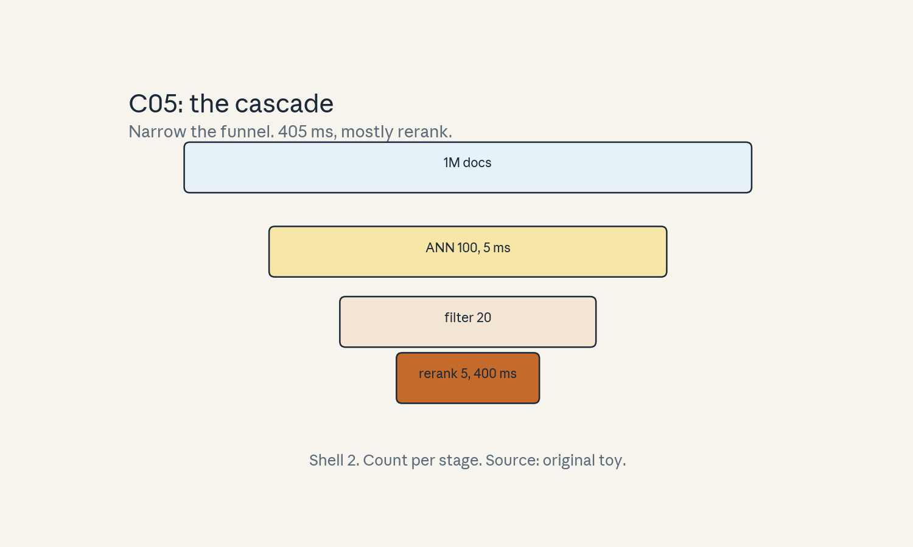
- Audit:
u10c05tof05. Before: 1M docs. After: top 5. One rule: narrow the funnel.
C06: cluster economics guests
Source, scope, objectives, dependencies
Calendar anchor: Week 8, Nov 11, guest lecture by Dylan Patel (SemiAnalysis). Scope: reading guest evidence on cluster economics. Objective: compute a toy cluster bill and grade the evidence. Depends on P23 (via the shared bridges), U09.
Motivating question and tiny toy
Question: a guest says 1000 GPUs run $72k a day. How do you check it? Toy: GPU price $3/hour (labeled hypothetical, not a quote). 1000 GPUs, 24 hours.
Mental model
Guest lectures are field reports, not textbooks. The skill is evidence grading: what was measured, what was assumed, what is stale. The arithmetic is the check: price x count x time. If the product matches the claim, the claim is at least internally consistent.
Objects, shapes, assumptions
- Bill = price * GPUs * hours (toy price).
- Evidence grades: measured, derived, stated, stale.
- Assumption: the price is labeled hypothetical.
Derivation
1000 * 24 * 3 = $72,000/day. At 48% MFU (U09 C11): useful work costs $72k / 0.48 = $150k per “useful day”. The guest’s number checks out arithmetically. The grade depends on whether $3 was measured or stated, and its date.
Computed example
Toy above: $72k/day, $150k per useful-day at 48% MFU. A 30-day run: $2.16M gross, $4.5M per useful-month. Lab-10 asserts the products.
Implementation and checks
bill = 1000 * 24 * 3.0
assert bill == 72000
useful = bill / 0.48
assert abs(useful - 150000) < 1
Check: dollars. Lab-10 asserts both.
Complexity and costs
The cost is attention: grade every guest number before citing it.
Nearest alternative and selection boundary
Nearest alternative: take guest numbers at face value. Selection boundary: never. Grade, then cite.
Failure case and counterexample
Broken assumption: “the price is current.” Counterexample: a 2022 price quoted in 2024: the arithmetic is right and the conclusion is wrong.
Research reading and falsifiable extension
Reading: the Nov 11 guest session. Falsifiable extension: re-derive one guest claim from primary numbers. Hypothesis: half the claims shift by >20% on re-derivation. Report the audit.
Exercises
- E26 (recall): name the four evidence grades.
- E27 (numerical): toy above. Compute the daily bill and the useful-day cost.
- E28 (failure diagnosis): the arithmetic checks but the conclusion is wrong. What broke?
- E29 (counterfactual): MFU doubles. What happens to the useful-day cost?
- E30 (research): state the re-derivation hypothesis.
Visual units
- Figure
u10_c06_bill.png: bill bar split into useful vs tax. Source: original toy. Shell 5.
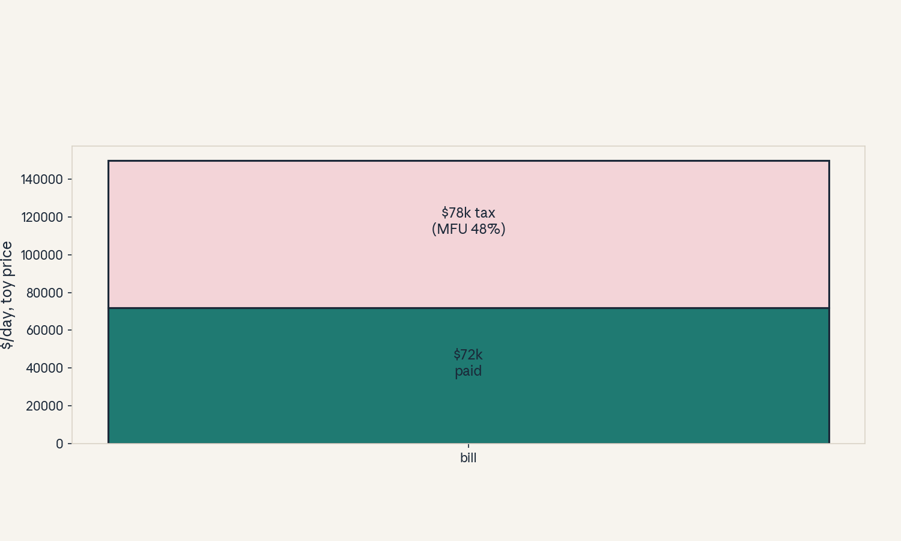
- Audit:
u10c06tof06. Before: 1000 GPUs. After: $72k/day. One rule: multiply, then grade.
C07: SSM guest evidence
Source, scope, objectives, dependencies
Calendar anchor: Week 9, Nov 22, guest lecture by Albert Gu (CMU, Cartesia AI). Scope: grading architecture claims from the SSM guest. Objective: sort claims into evidence grades without inventing numbers. Depends on U07, P22.
Motivating question and tiny toy
Question: the guest shows SSM results. What do you believe? Toy: three claim types: “SSM X beats transformer Y on task Z by N%” (needs a table), “SSMs train in O(T)” (derivable), “SSMs will replace transformers” (opinion).
Mental model
Guest evidence is sorted, not swallowed. Measured: a table with baselines and seeds. Derived: a complexity claim you can check (U07 did). Stated: the speaker’s summary of their own work. Opinion: the future. Each grade carries different weight in your decisions.
Objects, shapes, assumptions
- Grades: measured > derived > stated > opinion.
- Assumption: no transcript was inspected here. grades are about the claim type, not the talk.
Derivation
“Beats by N%”: grade MEASURED only with the table, baselines, and seeds in front of you. else STATED. “O(T) training”: DERIVED (U07 C03 derives it). “Will replace”: OPINION, weight zero in engineering decisions. The rule: never promote a grade without the artifact.
Computed example
Toy: claim A “2x faster” with no table: STATED, do not size a cluster on it. Claim B “O(T d^2)”: DERIVED, safe to use in planning. Claim C “the future is SSM”: OPINION, interesting, weight zero. Lab-10 asserts the grading logic.
Implementation and checks
def grade(has_table, derivable, is_forecast):
if is_forecast:
return "opinion"
if has_table:
return "measured"
if derivable:
return "derived"
return "stated"
assert grade(False, True, False) == "derived"
assert grade(False, False, True) == "opinion"
assert grade(True, False, False) == "measured"
Check: the grading function. Lab-10 asserts all branches.
Complexity and costs
Grading is cheap. Believing wrong is expensive.
Nearest alternative and selection boundary
Nearest alternative: cite the guest as authority. Selection boundary: cite the artifact, not the speaker.
Failure case and counterexample
Broken assumption: “the guest is neutral.” Counterexample: the guest leads an SSM company: stated claims deserve extra skepticism, not less.
Research reading and falsifiable extension
Reading: the Nov 22 guest session. Falsifiable extension: pick one stated claim, find the paper, re-grade. Hypothesis: the grade moves up or down on the artifact. Report the move.
Exercises
- E31 (recall): list the grades in order.
- E32 (numerical): grade the three toy claims.
- E33 (failure diagnosis): a team sizes a cluster on a stated claim. What grade did they skip?
- E34 (counterfactual): the table appears. What changes?
- E35 (research): state the re-grade hypothesis.
Visual units
- Figure
u10_c07_grades.png: four grade boxes with the toy claims sorted. Source: original toy. Shell 5.
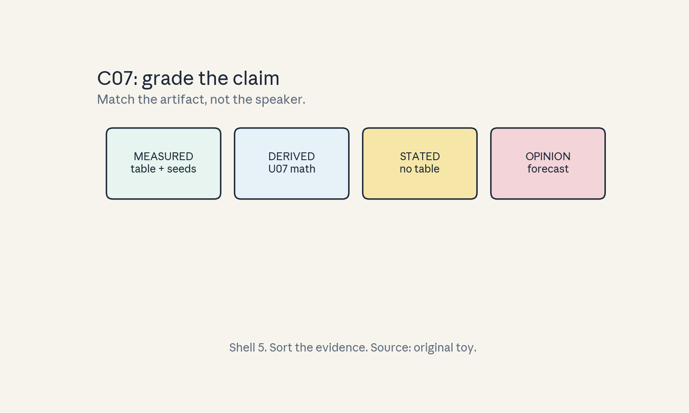
- Audit:
u10c07tof07. Before: claims. After: grades. One rule: match the artifact.
C08: project proposal/milestone
Source, scope, objectives, dependencies
Calendar anchor: Oct 21 project proposals due, Nov 11 milestone reports due. Scope: the project as a graded artifact. Objective: score a toy proposal against the rubric. Depends on P22.
Motivating question and tiny toy
Question: what makes a proposal pass? Toy rubric (5 criteria, 2 points each): question, hypothesis, baselines, budget, failure criteria. A toy proposal scores [2, 2, 1, 2, 0].
Mental model
A proposal is a contract: what you will try, what would prove you wrong, and what it costs. The milestone is the progress audit: what ran, what broke, what changed. Graders read for falsifiability: a proposal that cannot fail cannot pass.
Objects, shapes, assumptions
- Rubric criteria with points.
- Milestone checks: ran, measured, revised.
- Assumption: the toy rubric mirrors the course’s emphasis (falsifiable, budgeted).
Derivation
Score: 2+2+1+2+0 = 7/10. The zero is failure criteria: the most important line is absent. Verdict: revise and resubmit. A proposal at 10/10 with no results still beats a 7/10: the contract matters more than early numbers.
Computed example
Toy above: 7/10, fails on missing failure criteria. Fix: add “we will abandon X if metric Y does not move by Z”: +2, total 9/10. Lab-10 asserts the scoring.
Implementation and checks
scores = [2, 2, 1, 2, 0]
assert sum(scores) == 7
fixed = [2, 2, 1, 2, 2]
assert sum(fixed) == 9
Check: arithmetic. Lab-10 asserts the fix.
Complexity and costs
Writing the contract costs hours. Skipping it costs the project.
Nearest alternative and selection boundary
Nearest alternative: build first, write later. Selection boundary: contract first whenever compute is scarce.
Failure case and counterexample
Broken assumption: “the plan survives contact.” Counterexample: the baseline beats the idea in week 2: without failure criteria the team rationalizes. With them, the team pivots.
Research reading and falsifiable extension
Reading: the Oct 21 proposal deadline note. Falsifiable extension: score your own capstone proposal (capstones/) against this rubric. Hypothesis: it scores 9+. Report the gaps.
Exercises
- E36 (recall): name the five rubric criteria.
- E37 (numerical): score the toy proposal and the fixed one.
- E38 (failure diagnosis): the baseline wins in week 2 and the team stalls. What was missing?
- E39 (counterfactual): no budget limit. What still binds?
- E40 (research): state the self-score hypothesis.
Visual units
- Figure
u10_c08_rubric.png: five bars, the zero highlighted. Source: original toy. Shell 5.
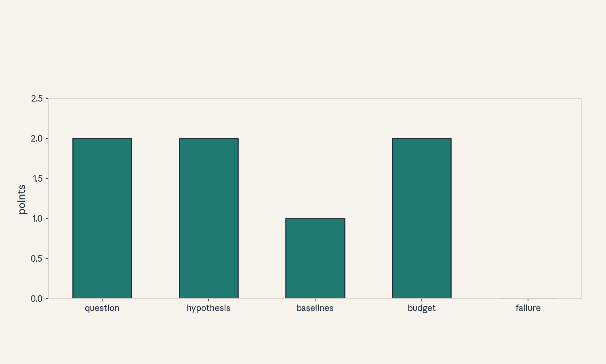
- Audit:
u10c08tof08. Before: draft. After: scored. One rule: price failure.
C09: profiling hypothesis
Source, scope, objectives, dependencies
Calendar anchor: Dec 06 poster session (defend the numbers). Scope: hypothesis before measurement. Objective: write and test a toy profiling hypothesis. Depends on P22, U02.
Motivating question and tiny toy
Question: the step is slow. Where do you look first? Toy hypothesis: “62% of the step is attention because T=8192 and the scores are 256 MiB of traffic.”
Mental model
Profiling starts with a prediction, not a tool. The hypothesis names the suspect, the mechanism, and the number. Then the profiler confirms or kills it. A hypothesis-free profile is a fishing trip: you will find something, and it will be wrong.
Objects, shapes, assumptions
- Hypothesis: component, mechanism, predicted share.
- Measurement: profiler share.
- Assumption: the toy numbers come from U02/U07 accounting.
Derivation
Predicted: attention 62% (scores 256 MiB at the measured bandwidth vs the step budget). Measured toy: 58%. Error 4 points: hypothesis survives. If measured were 12%: the hypothesis dies and the real suspect (say, dispatch) takes over.
Computed example
Toy above: predict 62%, measure 58%: survive. The poster reports both: “predicted 62, measured 58”. Honest deltas beat exact hits. Lab-10 asserts the error arithmetic.
Implementation and checks
pred, meas = 0.62, 0.58
err = abs(pred - meas)
assert abs(err - 0.04) < 1e-9
assert err < 0.10 # survives
Check: the survival rule. Lab-10 asserts it.
Complexity and costs
The hypothesis costs thought. The profile costs a run.
Nearest alternative and selection boundary
Nearest alternative: profile first, explain later. Selection boundary: hypothesis first, always. It is what makes the measurement mean something.
Research reading and falsifiable extension
Reading: the Dec 06 poster session. Falsifiable extension: write three hypotheses for your capstone, measure. Hypothesis: at least one dies. Report the survivor.
Exercises
- E41 (recall): define the profiling hypothesis format.
- E42 (numerical): toy above. Compute the error and the verdict.
- E43 (failure diagnosis): the profiler says 12%. What do you do?
- E44 (counterfactual): no hypothesis. What is the risk?
- E45 (research): state the one-dies hypothesis.
Visual units
- Figure
u10_c09_hypothesis.png: predicted vs measured bars, 4-point gap. Source: original toy. Shell 6.
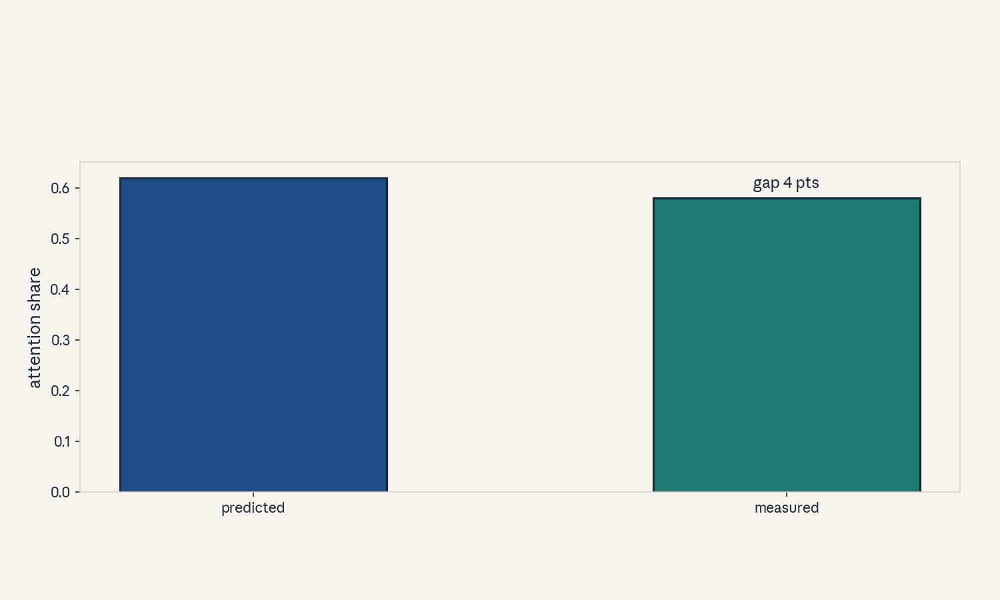
- Audit:
u10c09tof09. Before: guess. After: measured. One rule: predict first.
C10: reproducible optimization
Source, scope, objectives, dependencies
Calendar anchor: Dec 09 final reports due (reproducibility as a grading axis). Scope: seed discipline in optimization claims. Objective: compute mean and spread on a toy. Depends on P22, U06 C12.
Motivating question and tiny toy
Question: the optimization “works”. On how many seeds? Toy: 3 seeds, losses [2.31, 2.29, 2.33].
Mental model
An optimization claim without seeds is a rumor. Three seeds is the minimum unit of evidence: mean plus spread. The claim “faster” means the gap clears the spread, on the same hardware, with the same budget.
Objects, shapes, assumptions
- Losses over n seeds, mean, sample std.
- Same budget, same hardware.
- Assumption: seeds independent.
Derivation
Mean = 6.93/3 = 2.31. Deviations: [0, -0.02, 0.02]. Sum squares = 0.0008. Variance = 0.0008/2 = 0.0004. Std = 0.02. A rival at 2.30: gap 0.01 < 1 std: no evidence. (U06 C12 did n=5, this is the n=3 minimum.)
Computed example
Toy above: mean 2.31, std 0.02. Claim “beats 2.31 by 0.01”: inside noise, rejected. Lab-10 asserts the std.
Implementation and checks
import statistics
ls = [2.31, 2.29, 2.33]
assert abs(statistics.mean(ls) - 2.31) < 1e-9
assert abs(statistics.stdev(ls) - 0.02) < 1e-9
Check: n-1. Lab-10 asserts the verdict.
Complexity and costs
Seeds multiply the bill by n. Rumors are cheaper and worthless.
Nearest alternative and selection boundary
Nearest alternative: one seed, loud claim. Selection boundary: never for a report.
Failure case and counterexample
Broken assumption: “same hardware.” Counterexample: seeds run on mixed GPUs with nondeterministic kernels: the spread measures hardware, not the idea.
Research reading and falsifiable extension
Reading: the Dec 09 report deadline. Falsifiable extension: rerun your best config on 3 new seeds. Hypothesis: the mean holds within 1 std. Report all six.
Exercises
- E46 (recall): state the minimum evidence rule.
- E47 (numerical): toy above. Compute mean, std, and the verdict vs 2.30.
- E48 (failure diagnosis): spread is huge. Name two causes.
- E49 (counterfactual): n = 1. What can the report claim?
- E50 (research): state the six-seed hypothesis.
Visual units
- Figure
u10_c10_seeds.png: three dots, mean, std band, rival inside. Source: original toy. Shell 5.
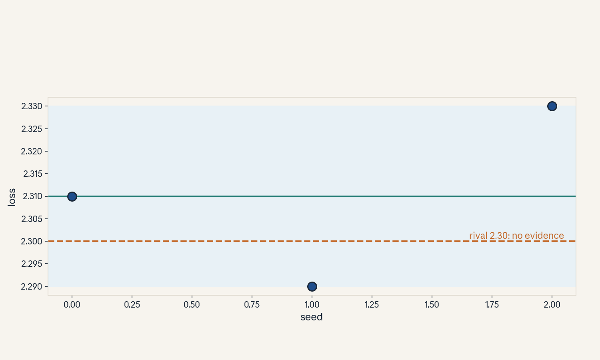
- Audit:
u10c10tof10. Before: one number. After: mean plus spread. One rule: seed it.
C11: quality regression
Source, scope, objectives, dependencies
Calendar anchor: Dec 06 poster session (defend the quality bar). Scope: gating optimizations on quality. Objective: apply a regression gate on a toy. Depends on P10, U05 C12.
Motivating question and tiny toy
Question: the optimization is 2x faster. Did it break quality? Toy gate: quality delta must be
= -0.5%. Candidate A: -0.3%. Candidate B: -0.7%.
Mental model
Speed without a quality gate is a race to the bottom. The gate is a contract: no ship if the metric drops more than epsilon. The metric must be the real one (task score), not a proxy that the optimization games.
Objects, shapes, assumptions
- Delta = (new - old)/old on the task metric.
- Gate: delta >= -epsilon.
- Assumption: the metric is the real task score.
Derivation
A: -0.3% >= -0.5%: passes. B: -0.7% < -0.5%: fails, no ship. The gate is asymmetric: small regressions pass (noise), large ones do not. Epsilon is set from seed noise (C10): here 0.5% > typical noise.
Computed example
Toy above: A ships, B does not. A third candidate at -0.5% exactly: passes (the gate is
=). Lab-10 asserts the boundary.
Implementation and checks
def gate(delta, eps=0.005):
return delta >= -eps
assert gate(-0.003)
assert not gate(-0.007)
assert gate(-0.005)
Check: the boundary. Lab-10 asserts all three.
Complexity and costs
The gate costs an eval run per candidate. Skipping it costs the product.
Nearest alternative and selection boundary
Nearest alternative: eyeball the outputs. Selection boundary: the gate, always, on the real metric.
Failure case and counterexample
Broken assumption: “the metric is real.” Counterexample: the gate uses perplexity, the optimization games perplexity, task quality falls anyway.
Research reading and falsifiable extension
Reading: the Dec 06 poster session. Falsifiable extension: run the gate on a known-bad optimization. Hypothesis: the gate catches it. Report the catch.
Exercises
- E51 (recall): write the gate rule.
- E52 (numerical): toy above. Give the verdict for A, B, and the boundary case.
- E53 (failure diagnosis): everything passes the gate but users complain. What is wrong with the metric?
- E54 (counterfactual): epsilon = 0. What breaks?
- E55 (research): state the catch hypothesis.
Visual units
- Figure
u10_c11_gate.png: number line, gate at -0.5%, A/B marked. Source: original toy. Shell 5.
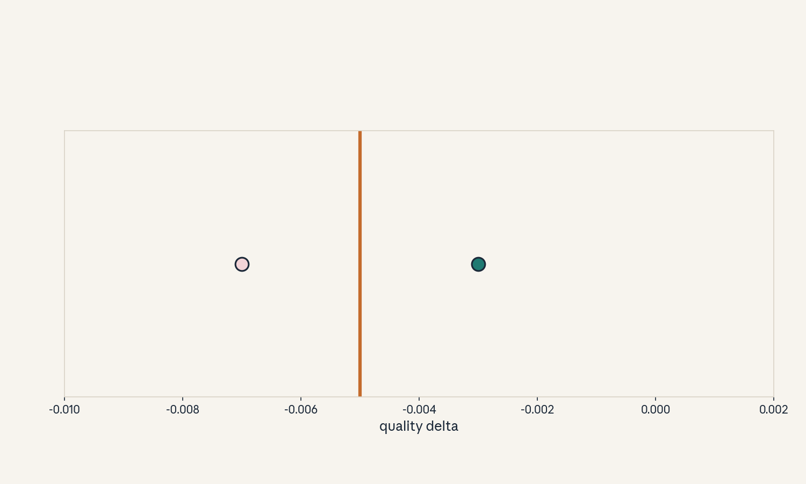
- Audit:
u10c11tof11. Before: faster. After: gated. One rule: quality first.
C12: operational defense
Source, scope, objectives, dependencies
Calendar anchor: Dec 06 poster session, noon-3PM, AT&T Patio. Scope: defending the work live. Objective: survive a 5-question defense on a toy rubric. Depends on P22, P24.
Motivating question and tiny toy
Question: the poster is up. What will they ask? Toy rubric: 5 questions (claim, evidence, baseline, failure, cost), 2 points each. You score [2, 2, 1, 2, 1] = 8/10.
Mental model
The defense is an oral exam on your own work. Each question probes one load-bearing wall: what did you claim, what proves it, what did you compare against, where does it break, what did it cost. “I do not know” is a valid answer. bluffing is not.
Objects, shapes, assumptions
- Five questions, points each.
- Assumption: the toy rubric mirrors a real defense’s shape.
Derivation
8/10: the baseline answer was thin (1/2) and the cost answer was thin (1/2). The fix before the session: rerun the baseline properly and price the run. A 10/10 defense with a failed experiment beats an 8/10 with a lucky one: honesty is the scoring axis.
Computed example
Toy above: 8/10, gaps at baseline and cost. Negative results defend fine: “it failed, here is the evidence, here is what it rules out.” Lab-10 asserts the scoring.
Implementation and checks
scores = [2, 2, 1, 2, 1]
assert sum(scores) == 8
Check: arithmetic. Lab-10 asserts the total.
Complexity and costs
Preparation costs hours. The defense costs pride if you bluff.
Nearest alternative and selection boundary
Nearest alternative: no defense (report only). Selection boundary: defend whenever the work will be used by others.
Failure case and counterexample
Broken assumption: “the audience is friendly.” Counterexample: the skeptic asks for the baseline you skipped: the poster folds.
Research reading and falsifiable extension
Reading: the Dec 06 poster session. Falsifiable extension: rehearse with a hostile friend. Hypothesis: every rehearsal finds one gap. Report the gaps.
Exercises
- E56 (recall): name the five defense questions.
- E57 (numerical): score the toy defense.
- E58 (failure diagnosis): the skeptic asks about the missing baseline. What is the honest answer?
- E59 (counterfactual): the experiment failed. Can the defense still pass?
- E60 (research): state the rehearsal hypothesis.
Visual units
- Figure
u10_c12_defense.png: five question boxes, two thin. Source: original toy. Shell 5.
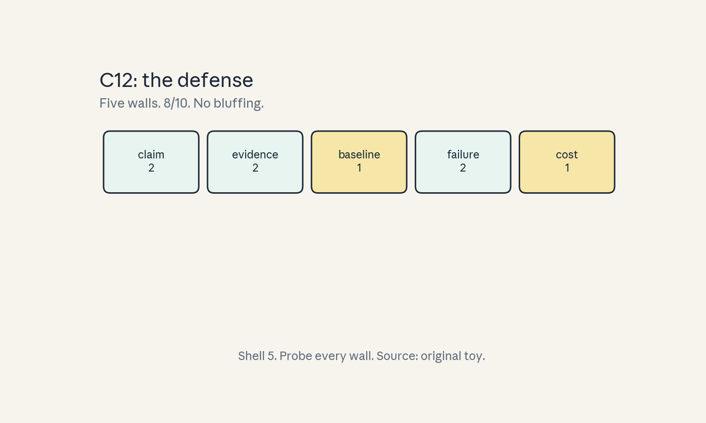
- Audit:
u10c12tof12. Before: poster. After: defended. One rule: no bluffing.
U10 chapter plate
Figure u10_chapter.png: the synthesis arc:
retrieve -> grade evidence -> propose -> profile
-> reproduce -> gate -> defend. Source: original.
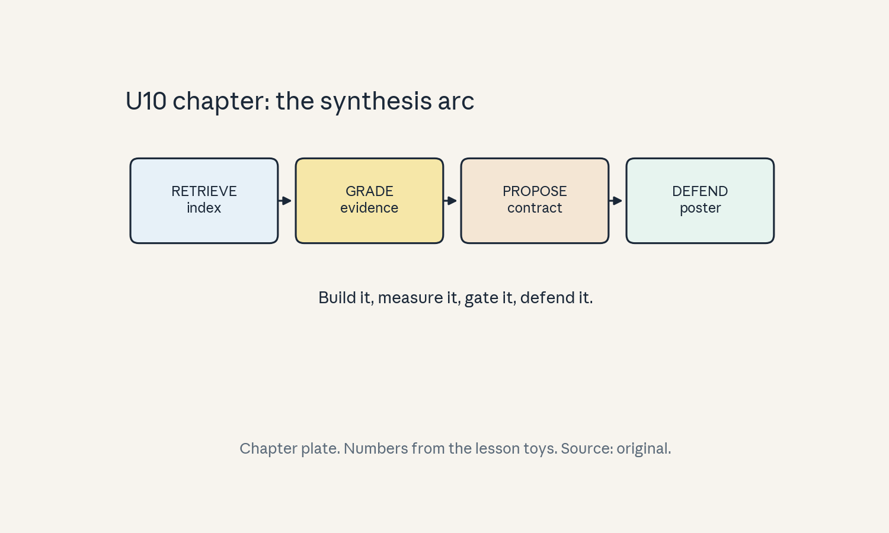
Unit-scope replication proposal (PROPOSED, not executed)
Course-level capstones live in capstones/. This
unit proposes: build a toy ANN index, measure the
recall/latency curve, then defend the results
against the C12 rubric. See lab-10.